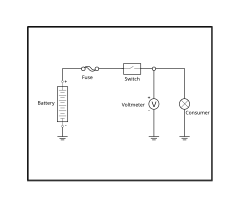
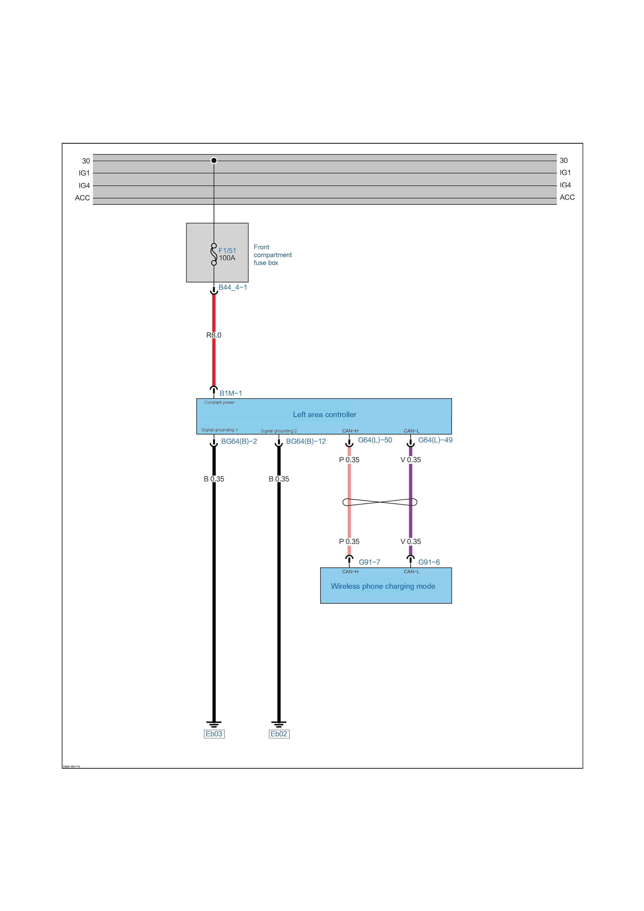
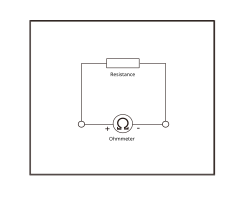
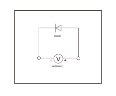
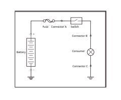

Voltage measurement
Connect the red probe of multimeter or voltmeter to the voltage/ohm measurement jack, and the black probe to the circuit jack;
Set the function selector switch of multimeter or voltmeter to DC voltage position;
Connect the test probe (the polarities of the test probes can be exchanged);
Read the voltage value on multimeter or voltmeter display.

Current measurement
Connect the red probe of multimeter or ammeter to current measurement jack, and the black probe to the circuit jack;
Set the function selector switch of multimeter or ammeter to current measurement position;
Connect the multimeter or ammeter in series to the circuit to be measured (with the red positive probe to the high-potential side of the circuit and the black negative probe to the low-potential side);
Read the current value on the multimeter.

Resistance measurement
Connect the red probe of multimeter or ohmmeter to the current/ohm measurement jack, and the black probe to the circuit jack.
Set the function selector switch of multimeter or ohmmeter to Ohm position;
Connect the probes of multimeter or ohmmeter to the resistor or coil to be measured and measure its resistance (ensure that the resistor or coil is de-energized during measurement).

Diode measurement
Connect the red probe of multimeter or ohmmeter to the voltage measurement jack, and the black probe to the circuit jack;
Set the function selector switch of multimeter or ohmmeter to diode test position;
Check the conduction status on both sides of the diode. If the diode is conductive in one direction and not conductive after the probes are exchanged, it indicates that the diode is in good condition;
If the diode is conductive in both directions, the diode is broken down. If the diode is not conductive in either direction, it indicates that the diode is open-circuited.

Circuit troubleshooting method
Troubleshooting with a test light
As shown in the circuit diagram, ground one end of the test light and test both ends of the fuse respectively with the other end. If the test light illuminates, it indicates that the fuse is fault free;
At connector A, establish a circuit between the test light and battery. If the test light illuminates, it indicates that there is no fault at connector A;
At connector B, establish a circuit between the test light and battery. Turn on the circuit switch in the diagram. If the test light illuminates, it indicates that there is no fault at connector A and the switch;
At connector C, establish a circuit between the test light and battery. Turn on the circuit switch in the diagram. If the test light works with electrical appliances, it indicates that there is no fault at connector C and electrical appliances;
Check the circuit grounding.

Troubleshooting with a multimeter
Set the function selector switch of the multimeter to continuity test position;
Ground the black probe of the multimeter;
Similar to troubleshooting with fault indicator, measure the voltage with the red probe of the multimeter at each connection in the circuit;
Determine the fault location according to whether the multimeter displays voltage.